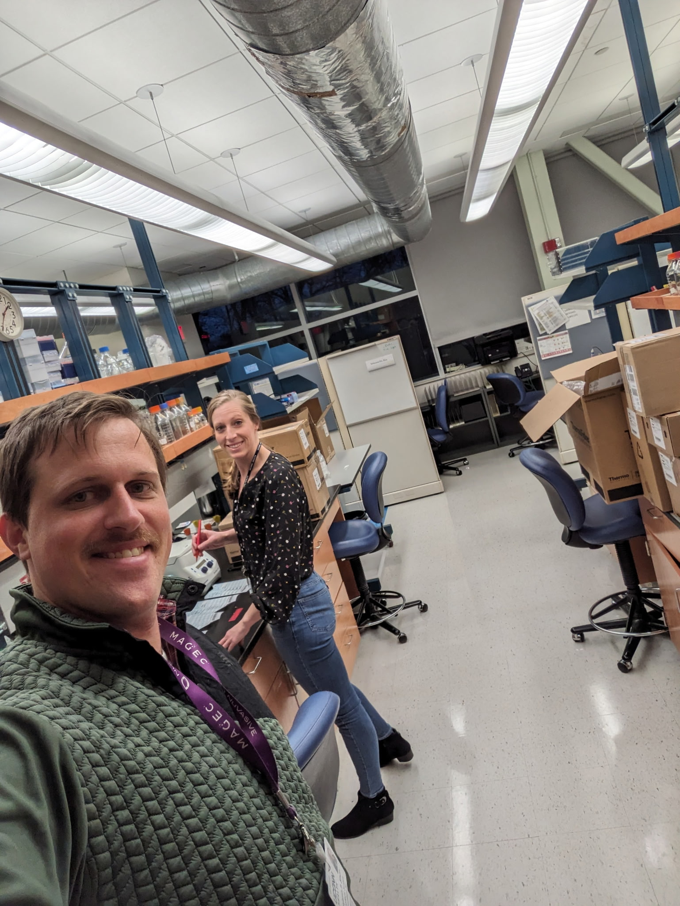
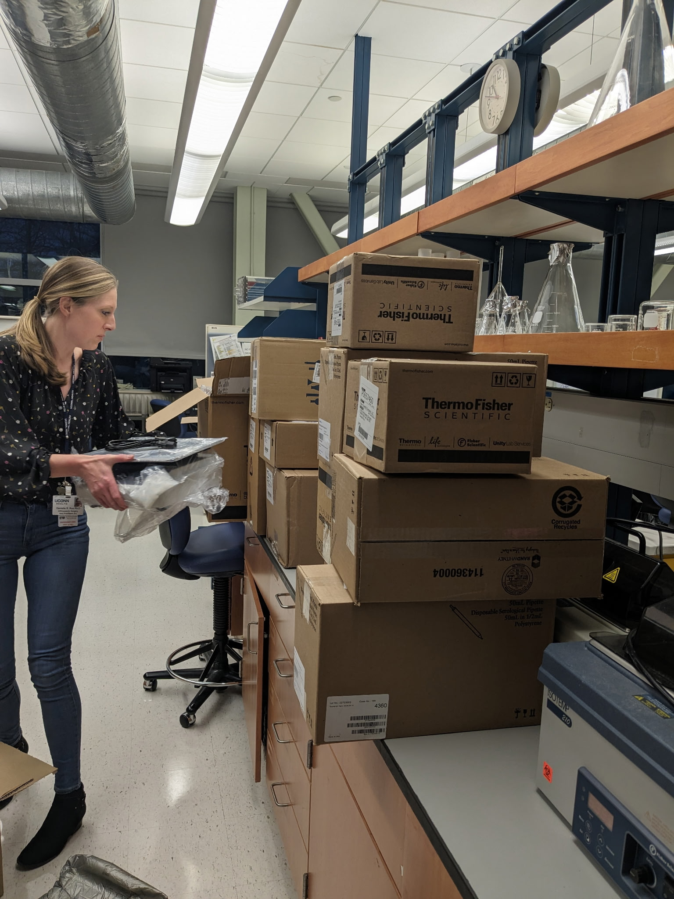

News
Lab updates, announcements, and highlights.
-
Recruiting trainees for rotations and research experiences Opportunities
Interested in joining the lab? We welcome motivated undergraduates, graduate student rotations, and postdocs. See the Contact page for what to include when reaching out.
-
Lab highlight: mapping cartilage zonal organization Research
We’re developing approaches to understand how developmental signaling programs shape postnatal articular cartilage architecture and how these patterns relate to disease vulnerability.
-
Launch of the Rux Lab! Announcement
We’re excited to share updates on our research here!
 